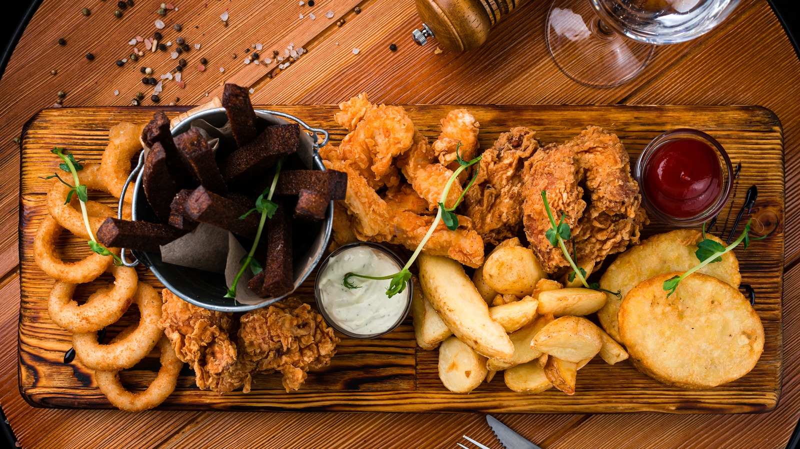
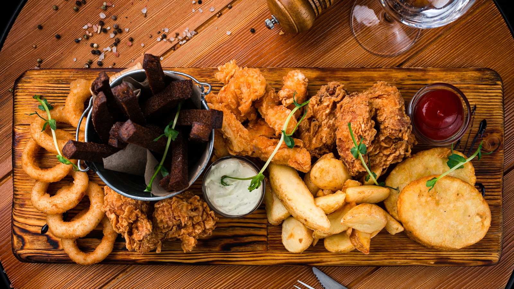

Who am I?
Hello! My name is Phuc Dang. I am a 31 years old Vietnamese-American. I graduated from San Jose State University with a B.S. majoring in Molecular Biology and minor in Chemistry. I have 2+ years experience in the customer service industry, as well as 2+ years experience as a laboratory technician. I am still a newbie in the software development industry, but I am extremely willing to learn. The soft skills that I've accumulated over the years in my previous jobs will propel me to success in this new profession.
What are my interests?
I am interested in A.I. technology because I believe that it will become a huge part of our future. I also think that A.I. is super cool and fascinating.
I am an avid PC gamer. I love MMORPG and survivor games. My current favorite game is Palworld.
I love to eat (who doesn't). I love noodles, fry foods, and anything that is spicy. My favorite cuisine is Japanese.
Oh and did I mention that I love dogs? Although I don't have any of my own, my favorite breeds are German Shepherd, Australian Shepherd, Golden Retriever, Huskies, and Border Collie.

 
